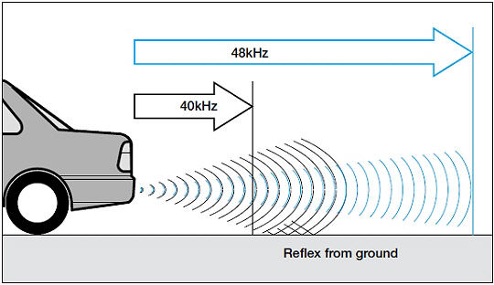

El ultrasonido es una onda acústica de muy alta frecuencia (+ 20kHz) , por encima de rango de frecuencias del oído humano. Los murciélagos utilizan ecolocalización ( un radar ultrasónico biológico ) con ondas de 200kHz , muy lejos de las capacidades del oído humano.

Los ultrasonidos tienen varias características que los hacen especialmente útiles
- Son inaudibles para el ser humano , y por lo tanto indetectables para el usuario.
- Las ondas pueden ser producidas de forma direccional
- Menor velocidad de propagación que la luz o las ondas de radio
Los ultrasonidos viajan en el aire alrededor de 340 m/s , como otros sonidos.
El tiempo que tarda una onda de ultrasonido en viajar 10 centímetros es aproximadamente 3ms , al contrario que 3.3ns que tarda la luz o las ondas de radio. Esto permite que se pueda medir utilizando procesamiento lento de señal.